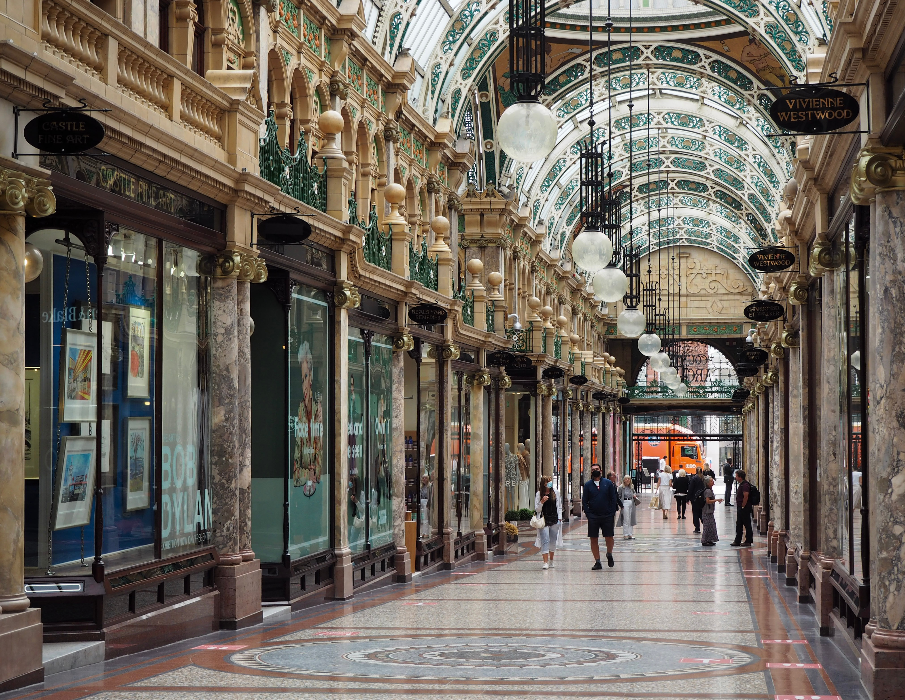

Sheffield
The beating heart of music, theatre and culture in South Yorkshire.

Leeds
Yorkshire's largest city, and the jewel in West Yorkshire's crown.

York
The great walled city, bringing ancient and modern together.